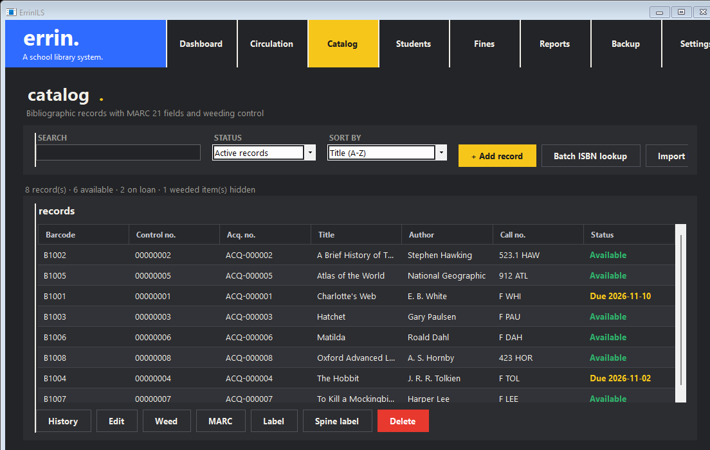
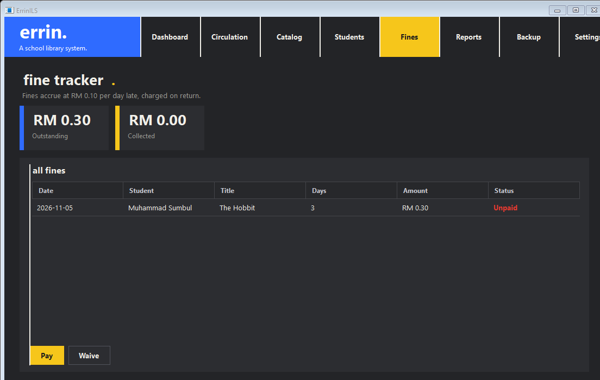
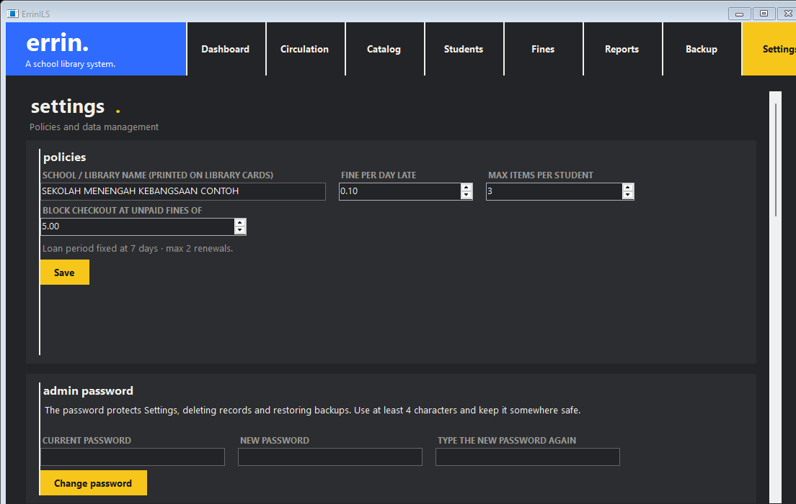

School Librarians & Administrators: Read all chapters. Start with Chapters 3 to 6, then review Chapters 7, 9, 14, and 15. Student Helpers & Prefects: Focus on Chapter 7 (Circulation Desk), Chapter 8 (Simplified View), and Chapter 15 (Android Barcode Gun). School IT Technicians: Focus on Chapters 2, 3, 14 (Network Ports & QR Pairing), 16 (Cloud Sync), and 18 (Backups & SQLite Optimization).
ErrinILS v1.4.3 User ManualChapter 1: About ErrinILS
1. About ErrinILS
1.1 What ErrinILS is
ErrinILS is an integrated library system (ILS) engineered specifically for primary, secondary, and vernacular school libraries. It is a lightweight, high-performance Windows desktop program that tracks three core operational pillars:
The Catalog: Books, readers, textbooks, and learning items in the school collection.
The Patrons: Students, teachers, and staff registered to borrow books, with automated validation for Malaysian 12-digit IC and MyKid numbers (YYMMDD-PB-###G).
Circulation & Accountability: Loans, reservations (holds), return audits, and fine tracking connecting patrons and items.
Everyday library operation does not require an active internet connection. All data persists locally in an ACID-compliant SQLite database and is committed the instant an action occurs. The internet is utilized strictly for optional cloud features: querying 31 Malaysian national and international union catalogs for ISBN copy-cataloguing, remote wireless barcode scanning via local Wi-Fi, and background cloud synchronization.
Unlike enterprise library software (such as Koha, Evergreen, or SLiMS) that requires complex web servers, Apache/Nginx, MySQL/PostgreSQL daemons, and dedicated server administrators, ErrinILS is built on a strict zero-external-dependency rule. Written in pure C# using only base .NET Framework 4.0 runtime assemblies (mscorlib, System, System.Drawing, System.Windows.Forms), it runs as a single standalone executable (ErrinILS.exe) with zero third-party DLLs and stores data in a fast SQLite database (%APPDATA%\Errin\errin-data.db).
ErrinILS v1.4.3 User ManualChapter 2: System Requirements
2. System Requirements & Hardware Guidelines
ErrinILS is engineered for school hardware, functioning smoothly on older classroom netbooks and desktop PCs.
Component
Minimum Specification
Recommended Specification
Operating System
Windows 7 SP1 (32-bit or 64-bit)
Windows 10 or Windows 11 (64-bit)
Runtime
Microsoft .NET Framework 4.0
Microsoft .NET Framework 4.8 (built into Win 10/11)
Memory (RAM)
1 GB RAM (under 40 MB active RAM usage)
2 GB RAM or higher
Disk Storage
15 MB for program binary; 50 MB for database
200 MB free hard drive space
Display Screen
1024 × 600 (PerMonitorV2 High-DPI support)
1366 × 768 or 1920 × 1080 (Sharp ClearType)
Barcode Scanner
USB HID Keyboard Wedge (or Android Phone App)
Standard 1D/2D USB Laser Scanner or ErrinILS Scanner App
Label Printer
Standard A4 printer
Standard A4 or thermal sticker printer (Code 128)
Network Port
Port 8585 (LAN / Wi-Fi)
Port 8585 open on local school Wi-Fi / hotspot
ErrinILS v1.4.3 User ManualChapter 3: Installation & Storage
3. Installing, Updating and Starting ErrinILS
3.1 Standard Windows Setup
Download ErrinILS-Setup-1.4.3.exe. Double-click the installer, click Yes at the Windows UAC security prompt. If Windows SmartScreen appears ("Windows protected your PC"), click More info and select Run anyway. Follow the setup wizard and click Finish. An application shortcut will be created on the Desktop and Start Menu.
3.2 Portable Standalone Execution
ErrinILS can also run completely portable without administrative installation. Extract ErrinILS-Windows.zip to any directory or USB flash drive and double-click ErrinILS.exe. It operates self-contained and persists all data to your user profile directory.
3.3 File System Storage Architecture
All database files, configuration settings, and rollback snapshots reside in %APPDATA%\Errin\:
File Name
Purpose & Data Maintained
errin-data.db
Main SQLite relational database: Catalog, patrons, loans, holds, fines, class cohorts, and policy settings.
errin-data.db.bak
Automatic atomic rollback snapshot taken before bulk operations to guard against hardware power failure.
Auto-generated self-signed TLS/SSL certificate used when secure HTTPS remote access is enabled.
ErrinILS v1.4.3 User ManualChapters 4 & 5: Setup & Rules
4. Initial Setup & Security Configuration
Upon first launch, ErrinILS automatically provisions the SQLite database engine (errin-data.db) with Write-Ahead Logging (WAL) and creates the configuration keystore (errin-config.json). Administrative functions—including system settings, database restoration, record deletion, and cloud sync credentials—are secured with salted PBKDF2/SHA-256 encryption.
Default Master Password: The factory default password is admin123. You should change this upon initial deployment.
Changing Master Password: Navigate to the Settings tab, scroll to Administrator Security, enter your current password, and specify a new secure password.
Emergency Password Recovery: If the administrative password is ever lost or forgotten, close ErrinILS, press Win + R, enter %APPDATA%\Errin, and delete errin-config.json. Upon restarting the system, the password resets to factory default (admin123) while 100% of your student and catalog data remains completely intact.
5. School Circulation Rules & Policy Parameters
Every school library operates under specific lending guidelines. In the Settings tab, librarians can configure school-wide circulation rules to match institutional policy:
Parameter
Default Value
Operational Rule in ErrinILS
Standard Loan Duration
7 Days
Items stamped for 7 calendar days. Auto-calculates return due date.
Daily Overdue Fine Rate
RM 0.10 / day
Assessed per overdue day upon return. Customizable (or set to 0.00).
Fine Blocking Threshold
RM 5.00
Patrons with unpaid fines ≥ RM 5.00 are blocked from new checkouts.
Maximum Renewal Count
2 Times
Extends loan period by 7 days. Blocked if item is overdue or held.
Student ID Primary Key
Malaysian IC / MyKid
Normalizes 12-digit string to YYMMDD-PB-###G with calendar date validation.
ErrinILS v1.4.3 User ManualChapter 6: The Dashboard
6. The Dashboard & Daily Overview
The Dashboard is the executive command screen presented upon launching ErrinILS. It summarizes real-time library operations without requiring manual reporting queries.
Figure 1: The ErrinILS Dashboard — Real-time collection metrics, live overdue tracking table, and Reading Champions leaderboard.
6.1 Core Dashboard Components
Simplified View Card: One-click launch button to open the distraction-free student self-checkout kiosk.
Metric Counters: Real-time counts for active cataloged titles, registered students, items on loan, total checkout tally, overdue books, and outstanding unpaid fines.
Live Overdue Table: Displays patron name, class, book title, due date, days overdue, and calculated fine balance. Used each morning to print overdue reminder slips.
Reading Champions Leaderboard: Real-time student ranking showing books read this month, this academic year, and of all time (Nilam program tracking).
ErrinILS v1.4.3 User ManualChapter 7: Daily Circulation Desk
The Circulation tab handles high-throughput front desk loan operations. When opened, keyboard focus is automatically placed in the active scan input box.
Figure 2: The Circulation Desk — High-speed barcode checkout, return/renew box, active loans list, and holds queue.
7.1 Checking Out Items
Scan the student's library card barcode into IC number (or type their 12-digit Malaysian IC).
The cursor automatically jumps to Item barcode. Scan the barcode sticker on the book.
The checkout registers instantly. An audible confirmation chime sounds, and toast notification confirms: "Checked out. Due: [YYYY-MM-DD]".
7.2 Returning and Renewing Items
Return: Scan the book barcode into Return / Renew and press Enter. If late, the fine is calculated automatically. If a reservation (hold) exists for another student, a prominent alert prompts you to put the item aside.
Renew: Scan the book barcode and click Renew. This extends the loan period by 7 days. Renewal is blocked if the book is overdue, has already reached the maximum renewal limit (2 times), or is held by another patron.
ErrinILS v1.4.3 User ManualChapter 8: The Simplified View
8. The Simplified View (Touch Self-Checkout Kiosk)
Designed specifically for young primary school students, the Simplified View is an uncluttered, high-contrast circulation screen displaying oversized touch/mouse buttons and friendly feedback banners. Administrative menus and database settings are completely hidden.
The student scans their card barcode. The banner illuminates in green: "Hello, [Student Name]!"
The student scans their chosen book barcode. ErrinILS confirms on screen: "Checked out: [Book Title]. Due back [Date]!"
Click Next student to clear the kiosk for the next reader.
Exiting Simplified View
To return to the administrative librarian interface, click the Exit Simplified View button in the bottom right corner.
ErrinILS v1.4.3 User ManualChapter 9: The Catalog & 31-Source Lookup
9. The Catalog & 31-Source ISBN Union Copy-Cataloguing
The Catalog tab manages all bibliographic records, physical copies, Dewey Decimal Classification (DDC) numbers, and copy statuses.

Figure 4: The Bibliographic Catalog — Paged record navigation, 31-source ISBN lookup, weeded copy filtering, and label printing.
9.1 31-Source Malaysian & Global Union Lookup
Rather than typing book details manually, click + Add record, scan the ISBN barcode into Copy cataloguing, and click Look up. ErrinILS queries 31 national, state, academic, and global archives in parallel:
Malaysian National Union: Katalog Induk Kebangsaan (KIK), Perpustakaan Negara Malaysia (PNM Clarivate Discover), and u-Pustaka Consortium.
State Public Libraries: PPAS (Selangor), PPAP (Penang), PPANPK (Perak), PPANK (Kedah), PPANPS (Perlis), PPANJ (Johor), PPAK (Kelantan), PPAT (Terengganu), PPAPH (Pahang), PPANS (Negeri Sembilan), PERPUSTAM (Melaka), Pustaka Negeri Sarawak, PNS (Sabah), PKL (Kuala Lumpur), PPJ (Putrajaya), and PPL (Labuan).
Top Malaysian Universities & Institutes: Universiti Malaya (UM Pendeta), Universiti Kebangsaan Malaysia (UKM), Universiti Teknologi MARA (UiTM PTAR), Universiti Pendidikan Sultan Idris (UPSI), Dewan Bahasa dan Pustaka (DBP Archives), and MALCat.
Global Union Catalogs: Library of Congress (Z39.50), Open Library API, Google Books API, HathiTrust MARCXML, and K10plus German Union.
Title, author, publisher, publication year, subjects, and Dewey Decimal call number are automatically populated in under 1 second.
ErrinILS v1.4.3 User ManualChapter 10: Batch Label Printing
10. Batch Barcode Label Printing & Spine Labels
ErrinILS generates sharp, scannable Code 128 barcode labels and call number spine tags formatted for standard A4 sticker sheets or thermal label rolls.
Multi-Select Checkboxes: In the Catalog tab, check individual books or click Select All on Page.
Batch Print Dialog: Click Print Barcodes to open the print preview. Customize label dimensions, font sizes, library header text, and barcode inclusion.
Direct Print / PDF: Send directly to any connected printer or save as an audit-proof PDF file for later printing.
ErrinILS v1.4.3 User ManualChapter 11: Patron Management
11. Student Patrons & Malaysian IC Validation
The Students tab maintains registered student and teacher records, class allocations, and scannable identity cards.
Figure 5: Student Management — Malaysian IC/MyKid validation, class cohorts, borrowing history, and card printing.
11.1 Malaysian IC / MyKid Validation
Click + Register student. Enter the 12-digit Malaysian IC or MyKid number. ErrinILS automatically formats the number into YYMMDD-PB-###G and verifies that the birth month (01–12) and day are mathematically valid for the given calendar month. Enter the student's name and class (e.g. 5 Gemilang), then click Print Card to produce a standard library card (85.6 × 54 mm).
ErrinILS v1.4.3 User ManualChapter 12: Fines Management
12. Fines Management & Lost Books
When overdue items are returned, ErrinILS automatically calculates the fine: Days Overdue × Daily Rate (RM 0.10). Patrons with fines exceeding the block threshold (default RM 5.00) are blocked from borrowing until settled.

Figure 6: The Fines Tracker — Real-time outstanding balances, cash payment receipting, and fine waivers.
Select any fine record in the table and click Pay when the student pays cash, or Waive if excusing the charge. Settling fines immediately lifts the circulation block.
ErrinILS v1.4.3 User ManualChapter 13: Collection Weeding
13. Collection Weeding & Inventory Maintenance
Maintaining a healthy, relevant school library collection requires periodic planned withdrawal (weeding) of damaged, obsolete, or missing materials. ErrinILS provides a structured, audit-proof weeding workflow that preserves historical circulation logs for administrative reporting.
Weeding a Copy: In the Catalog tab, select any bibliographic record, click Weed Copy, and choose the withdrawal reason:
Condition / Damage: Physical wear, torn pages, water exposure, or mildew.
Obsolete Content: Superceded syllabus materials or outdated factual references.
Lost / Missing: Unreturned copies confirmed missing during annual inventory audit.
Excess Duplicate: Pruning surplus copies of low-demand legacy titles.
Audit Trail Preservation: Weeded items are immediately hidden from active OPAC search and student circulation, preventing accidental checkouts. However, all accession records, historical borrowing counts, and disposal timestamps are permanently retained in SQLite for annual school audit verification.
Restoring Withdrawn Copies: If a missing book is recovered, switch the Catalog filter from Active Copies to Weeded Copies, select the title, and click Restore to Active to return the copy to the active shelves.
ErrinILS v1.4.3 User ManualChapter 14: Remote Access & Port 8585
14. Remote Access, Network Ports (Port 8585) & Web OPAC
ErrinILS includes a built-in pure C# HTTP/HTTPS server binding to 0.0.0.0 (all network interfaces: Ethernet, Wi-Fi 2.4/5GHz, mobile hotspots, and VPNs). This allows smartphones, tablets, and other classroom laptops to interact with the library system without installing database daemons.

Figure 8: Settings & Remote Access — Network port configuration (Port 8585), QR code device pairing, and OPAC settings.
14.1 Network Port Configuration (Default Port: 8585)
The default network port for ErrinILS desktop is 8585. To verify or change the port:
Navigate to the Settings tab.
Under Remote Access, locate the Port field (set to 8585 by default).
Ensure the server switch is set to On, and click Apply.
The server will report: "Remote Access server is running on port 8585". Windows Firewall is automatically configured by ErrinILS.
14.2 Web OPAC (Online Public Access Catalog)
School Network OPAC: Accessible in any web browser at http://<pc-ip>:8585/opac. Students and teachers can search books by title, author, call number, and explore dedicated subject headings without needing staff login.
Patron Login: When enabled in Settings, students can log in with their Student ID or IC to view their active loans, due dates, fines, reading history, and place holds on borrowed copies.
1-Click Static Export (GitHub Pages): Click Export Static OPAC in Settings to generate a static client-side bundle that can be hosted 24/7 on GitHub Pages for free without leaving the library PC turned on.
The Paired Devices table in Settings displays all authorized mobile scanners and remote terminals with live network attributes: Device Name | IP Address | Port | Status | Paired Date | Last Active. Every mobile interaction automatically updates the device's IP and active port.
From the desktop circulation PC, librarians have four dedicated remote control actions:
Ping App: Sends a sub-second HTTP GET ping to the phone's companion listener (Port 8586). Measures and displays real-time Wi-Fi round-trip latency (e.g. "Connected to ErrinILS Scanner! Latency: 12ms") or alerts if the phone is asleep.
Beep Phone: Sends a remote signal to the phone, causing it to immediately play an audible notification tone and trigger a distinct haptic vibration pattern. Perfect for verifying phone audio/vibration feedback or finding a misplaced scanner phone in the library stacks.
+ Connect Scanner by IP...: Opens a direct connection dialog. Librarians simply enter the phone's IP address (displayed on the phone's Settings screen). ErrinILS pushes a cryptographically secure token directly to the phone, pairing it instantly with zero PIN typing on the phone.
Discover Scanners: Multithreaded subnet discovery scans the local Wi-Fi network (Port 8586) in parallel, listing all active ErrinILS Scanner phones within 1 second. Select any detected phone and click Connect & Pair Selected.
ErrinILS v1.4.3 User ManualChapter 15: Android Scanner App
15. ErrinILS Scanner (Android Companion Barcode Gun & Port 8586)
ErrinILS Scanner is a native Android application engineered to eliminate the cost of commercial wireless barcode guns. Using Google ML Kit Barcode Scanning and CameraX, it converts any Android smartphone or tablet into a high-speed wireless barcode scanner, mobile cataloging terminal, and bidirectional companion device.
15.1 Core Android App Features
⚡ Barcode Scanner (Virtual Wireless Barcode Gun): Point your smartphone camera at book barcodes, student cards, or spine labels. Scanned barcodes are streamed wirelessly over local Wi-Fi directly into the active text field on your desktop PC (via /api/wedge) with automatic Enter keystroke.
📚 Add Book (Mobile ISBN Camera Cataloging): Scan the printed ISBN barcode on the back cover of any book. The app automatically fetches bibliographic details across 31 union catalogs, allows editing title, author, publisher, DDC call number, and saves the new record directly to the desktop database via /api/item.
🔄 Embedded Companion Server (Port 8586): Hosts a lightweight, zero-dependency HTTP socket server listening on port 8586 whenever the app is running. It handles incoming pings, remote haptic/sound beeps, and push pairing directly from the desktop PC.
Manual Host & Port Settings: Explicitly enter the desktop PC Host / IP address, network port (default 8585), and 6-digit pairing code.
Rapid Next Book Accessioning: Tap "➕ Register Next Book" to instantly clear the form and reopen the camera viewfinder for rapid batch cataloging of book donations.
15.2 Four Flexible Connection & Pairing Methods
Method 1: Instant 1-Second QR Code Pairing (Recommended)
On desktop ErrinILS, go to Settings and click + Pair new device. A 6-digit pairing code and QR code appear on screen.
Open the ErrinILS Scanner app on your Android phone and select the ⚡ Barcode Scanner tab.
Point your phone camera at the QR code displayed on the PC screen.
The app automatically reads the PC IP address, port (8585), and pairing code, completes cryptographic handshake, and flashes: "✅ Successfully paired with Desktop PC!".
Method 2: Manual Host, Port (8585) & Code Entry
On desktop ErrinILS, go to Settings and click + Pair new device to display the 6-digit code (e.g. 482 195).
In the Android Scanner app, tap the Settings (gear) icon in the top right corner.
Under Desktop PC Connection, enter:
Server Host / IP: The PC's local IP address (e.g. 192.168.1.50).
Port:8585 (default).
6-Digit Pairing Code: The code shown on your PC screen (e.g. 482195).
Device Name: A friendly name (e.g. Librarian Samsung).
Tap Pair with PC. The app connects to http://<ip>:8585/api/pair, stores the persistent authorization token (X-Errin-Token), and establishes an authenticated link.
Tap Test Connection to confirm live communication.
Method 3: Direct PC Push Pairing ("+ Connect Scanner by IP") — No PIN Entry on Phone
Open the ErrinILS Scanner app on the phone, tap Settings, and observe the Phone Listener URL (e.g. http://192.168.1.105:8586).
On desktop ErrinILS, go to Settings → Remote Access and click + Connect Scanner by IP....
Type the phone's IP address (e.g. 192.168.1.105) and port (8586).
Click Connect & Pair Device. ErrinILS desktop connects to the phone's listener, pushes a secure token, and configures the phone automatically. The phone immediately chimes and reports: "✅ Connected to ErrinILS PC!".
Ensure your Android phone has the ErrinILS Scanner app open and is connected to the school Wi-Fi.
On desktop ErrinILS Settings, click Discover Scanners.
ErrinILS automatically scans the local Wi-Fi subnet across port 8586. Your phone appears in the discovered list with its device name, IP, port, and latency.
Click Connect & Pair Selected to establish immediate wireless linkage.
Inside the Android app Settings, librarians can customize operational preferences:
Audible Beep on Scan: Plays an immediate tone upon valid barcode recognition.
Vibration on Scan (Haptic): Triggers physical haptic motor vibration when a barcode is recognized.
Auto-Enter Keystroke: Automatically appends an Enter key event after the barcode string is streamed to the PC, advancing the circulation workflow instantly.
Torch Toggle: Activates the phone's LED camera flash for scanning in dimly lit library stacks.
Manual Barcode Keyboard Fallback: If a physical barcode sticker is torn or faded, tap the keyboard icon to type the barcode number manually; it streams wirelessly to the PC exactly like a camera scan.
Flowchart 4: Bidirectional Dual-Port Companion Architecture (Desktop Port 8585 ↔ Mobile Port 8586)
ErrinILS v1.4.3 User ManualChapter 16: Dual Cloud Sync
16. Dual Cloud Sync (Google Drive & GitHub)
ErrinILS features an innovative privacy-compliant dual cloud synchronization engine that allows multiple library PCs to share identical records without exposing student personal data to public repositories:
Private Patron Data via Google Drive: Student personal data (Malaysian IC numbers, home addresses, phone numbers, loan histories, and fines) is strictly private. ErrinILS syncs patron records directly to the school's private Google Drive via REST API v3 without requiring third-party desktop software.
Public Catalog Data via GitHub: Bibliographic catalog data contains no personal information. It conforms strictly to the Pustaka Terbuka Data Provider Standard (PPAPP model), synchronizing catalog records to GitHub (catalog.json, catalog.mrc, catalog.xml, single-record MARCXML shards, and holdings tables).
Multi-PC Parity: Installing ErrinILS on a second library computer connects to Google Drive and pulls the GitHub catalog, achieving seamless multi-station circulation and cataloging.
Executive Analytics: Active titles, active loans, overdue percentages, registered students, reader participation rates, fines assessed/collected, and weeded items.
Circulation Trajectory: Monthly checkouts over the last 6 months to analyze peak borrowing periods.
Dewey Decimal Breakdown: Proportional distribution of books across all 10 DDC classes (000–900) to identify collection development gaps.
1-Click CSV Full Report: Exports an executive spreadsheet containing complete analytics, overdue notices, unpaid balances, and leaderboard rankings for school board presentations.
ErrinILS v1.4.3 User ManualChapter 18: Backup & Recovery
In the Backup tab, click Export Backup (ZIP). ErrinILS packages the active SQLite database, configuration files, and MARC catalog into a compressed ZIP file. Save this backup to an external USB flash drive every Friday afternoon.
Restoring from Backup: On a new or repaired computer, install ErrinILS, open the Backup tab, click Restore from backup, and select your backup ZIP file. ErrinILS restores all records instantly.
Database Optimization: Under Settings or Backup, click Optimize Database. ErrinILS executes PRAGMA integrity_check;, PRAGMA optimize;, and VACUUM; to reclaim unused disk space, defragment tables, and verify file integrity.